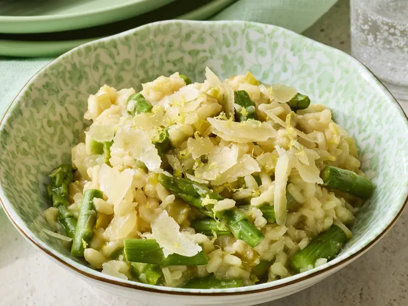

Asparagus Risotto

Description
This creamy asparagus risotto is flavored with garlic and white wine, and finished with Parmesan cheese, lemon juice, and lemon zest for a bright flavor.
This creamy asparagus risotto with lemon is bright, flavorful, and perfect for springtime.
Ingredients
- 20 fresh asparagus spears, trimmed
- 4 cups low-sodium chicken broth
- 2 tablespoons olive oil
- 1 small onion, diced
- 1 rib celery, diced
- ¼ teaspoon salt
- ¼ teaspoon ground black pepper
- 1 cup Arborio rice
- 1 clove garlic, minced
- ½ cup dry white wine
- ¼ cup freshly grated Parmesan cheese
- 2 tablespoons lemon juice
- ½ teaspoon lemon zest
Steps
- Place a steamer insert into a saucepan and fill with water to just below the bottom of the steamer. Bring water to a boil. Add asparagus, cover, and steam until tender, about 5 minutes. Cut asparagus into 1-inch pieces; set aside.
- Meanwhile, heat chicken broth in a saucepan over medium heat; keep at a simmer while preparing risotto.
- Heat olive oil in a large skillet over medium heat. Add onion and celery; cook and stir until vegetables are tender, about 5 minutes. Season with salt and black pepper. Stir in Arborio rice and garlic; cook and stir until rice is lightly toasted, about 5 more minutes.
- Stir in white wine and simmer until it has mostly evaporated, then stir in 1/3 of the hot chicken broth; continue stirring until rice has absorbed liquid and turned creamy. Repeat this process twice more, stirring constantly. Stirring in the broth should take 15 to 20 minutes in all. When finished, rice should be tender yet firm to the bite. Stir in asparagus.
- Remove from heat and mix in Parmesan cheese, lemon juice, and lemon zest. Serve immediately.